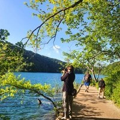

01 / 04
Focení nemovitostí
HDR fotografie interiérů i exteriérů bytů a domů se širokoúhlým objektivem a stativem. Každý snímek ručně upravím v Lightroomu a dodám do 48 hodin.
Zeptat se na termín→


Nemovitosti a produkty v nejlepším světle
Zeptat se na termín →(01) Ahoj
Jmenuji se Jonáš Šandera a pod značkou Sany Photo fotím nemovitosti , letecké záběry dronem a produkty . Studuji fotografickou školu v Hradci Králové a za focením dojíždím po celém kraji.
(02) Co fotím
01 / 04
HDR fotografie interiérů i exteriérů bytů a domů se širokoúhlým objektivem a stativem. Každý snímek ručně upravím v Lightroomu a dodám do 48 hodin.
Zeptat se na termín→02 / 04
Ukážu polohu, okolí a pozemek z perspektivy, kterou ze země nezjistíte. Mám licenci pro komerční lety, takže je vše legální.
Zeptat se na termín→03 / 04
Studiové, lifestyle i high-end produktové fotky pro e-shopy, sociální sítě a reklamu. Produkty mi stačí poslat kurýrem a já vám je vrátím zabalené zpátky.
Zeptat se na termín→Dále nabízím
Přirozené momenty bez přehnaného pózování, venku i v interiéru. S dětmi fotím trpělivě a s legrací.
↗(04) Postup
Od první zprávy po hotovou galerii.
Krok 1 z 4
Napište mi e-mailem nebo přes formulář. Společně domluvíme termín a rozsah focení.
Krok 2 z 4
Přijedu na místo. Focení nemovitosti trvá podle její velikosti jednu až dvě hodiny.
Krok 3 z 4
Každý snímek ručně zpracuji: HDR, světla, barvy a korekce perspektivy.
Krok 4 z 4
Do 48 hodin vám pošlu odkaz na složku s fotkami ve vysokém rozlišení, připravenými pro inzerci.
Snímky, které prodávají rychleji
(05) Za objektivem
Jsem Jonáš, student fotografické školy SSSOGHK v Hradci Králové. Specializuji se na fotografii nemovitostí, letecké záběry dronem, produktovou fotografii a rodinné focení. Pracuji s Nikonem Z6 II, DJI dronem a gimbalem.
U realit mi jde o světlé a prostorné snímky, které vypadají přirozeně a přitáhnou kupce už v inzerátu. Fotím HDR technikou, srovnávám perspektivu i vertikály a odstraňuji rušivé věci. Surová fotka je pro mě jen začátek, každý snímek proto ručně zpracuji v Lightroomu a Photoshopu.
Věřím, že skvělá fotografie není jen o technice, ale i o příběhu, světle a správném momentu. Ať jste makléř, e-shop nebo rodina, připravím vám nabídku na míru a za férovou cenu.

Jonáš
Jonáš Šandera · Fotograf nemovitostí a produktů
Fotky nemovitostí posílám do 48 hodin, za příplatek 1 000 Kč i expresně do 24 hodin. Fotky z rodinného focení dodávám do 5 pracovních dní.
Focení malého bytu do 50 m² stojí 1 990 Kč za 12 fotografií. Balíček KOMPLET DŮM vyjde na 4 290 Kč a obsahuje 25–35 fotek ze země, 5–10 fotek z dronu a zakreslení hranic pozemku zdarma. Pro realitní makléře mám množstevní slevy.
Ano, mám licenci pro komerční lety s dronem. Natáčím i fotím pozemek a jeho okolí z výšky a do fotek můžu graficky vyznačit hranice a přístup.
Produkty mi pošlete přes Zásilkovnu nebo PPL. Vyfotím je, pošlu vám náhledy k výběru, vybrané fotky oretušuji a produkty vám vrátím zpátky zabalené a nepoškozené.
Ano, dojíždím po celém Královéhradeckém kraji. Mimo domovské město účtuji dopravu 8 Kč za kilometr.
(07) Kontakt
Napište pár vět o tom, co si představujete, a termín, který se vám hodí.